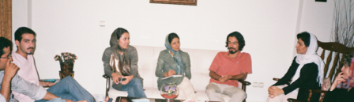

پذيرش > تریبون > مقالات > کمپین با شیوه ای که پیش می رود جنبش زنان را قوی تر و پرتعداد تر می کند
 چالش ها و دستاوردها در نشستی با فعالان کمپین در شهرستان ها چالش ها و دستاوردها در نشستی با فعالان کمپین در شهرستان ها

 کمپین با شیوه ای که پیش می رود جنبش زنان را قوی تر و پرتعداد تر می کند کمپین با شیوه ای که پیش می رود جنبش زنان را قوی تر و پرتعداد تر می کند
14 شهریور 1386 - جلوه جواهری - نسخه قابل چاپ

یک سال از آغاز به کار کمپین یک میلیون امضا می گذرد. در این یک سال کنشگران زیادی به کمپین پیوستند و در اوج و حضیض هایی که در طی مسیر داشتند، برخی ماندند و برخی رفتند. هر بار که خبر پیوستن شهری را می شنیدیم وجودمان را شوری می گرفت و هر بار که می شنیدیم بر شهرهای کوچک تر فشار وارد می آید متاثر می شدیم که چرا از دست ما کاری بر نمی آید.
در آستانه سال جدید کمپین، گروه رسانه بر آن شد که میزگردی را با محوریت نحوه فعالیت کمپین در شهرهای مختلف برگزار کند. این پیشنهاد را مطرح کردیم و از میان شهرهای پیوسته به کمپین، فعالان شیراز و کرمانشاه، آمادگی خود را برای برگزاری میزگرد در شهرهای متبوعشان اعلام کردند و در نهایت قرعه به نام کرمانشاه افتاد. از میان شهرهای دعوت شده همدان، رشت، تهران، کامیاران و کرمانشاه توانستند در این میزگرد حضور یابند. متاسفانه در اشتباهی که در هماهنگی روز رخ داد دوستان شیرازی از سفر جاماندند و ما از دیدارشان محروم شدیم.
این اولین میزگرد رسانه در بین فعالان شهرهای مختلف است و امیدواریم شروعی باشد در انعکاس بیشتر نظرات کنشگران در شهرهای مختلفی که به کمپین پیوسته اند. در این میزگرد مهرداد حمزه از همدان، گلاله بهرامی و بلال مرادویسی از کامياران، کاوه کرمانشاهی از کرمانشاه، زهره اسدپور از رشت، زینب پیغمبرزاده، زارا امجدیان و سارا لقمانی از تهران حضور داشتند.
از دوستانی که سختی راه را هموار کردند و به این سفر آمدند و همچنین از مهمان نوازی گرم دوستان در کرمانشاه بسیار ممنون هستیم و امیدواریم باب این گفت و گو ها باز شده باشد و بار دیگر بتوانیم در شهری دیگر و با حضور کنشگرانی دیگر این گفت و گو ها را ادامه دهیم.
جلوه جواهری : سال گذشته اولین سال تجربه اندوزی ما در کمپین بود . در این یک سال هر کدام از ما در شهرهای خود با مسائل مختلفی روبرو بودیم. شما به عنوان کنشگران کمپین در سال گذشته با چه چالش هایی در ارتباط با کمپین مواجه بوده اید و در عین حال به نظرتان کمپین چه دستاوردهایی در شهرهای شما داشته است؟
========================================
زهره اسدپور: تقویت مبناهای تئوریک باعث می شود که ما دید درست تری نسبت به حرکتمان داشته باشیم
زارا امجدیان: بزرگترین دستاورد کمپین گوناگونی اش است و اینکه توانسته مخالف را کنار مخالف حول یک خواسته حداقلی بنشاند و با همین تعداد کم امضا توانسته بحث خود را به گفتمان سیاسی ببرد
بلال مرادویسی : زنان کردنشین پتانسیل آن را دارند که بحث زنان به بحث جدی آنان تبدیل شود، اما فضا بسیار بازدارنده است. بنابراین مهمترین دستاورد ما این بوده که توانستیم به فضای موجود، این تلنگر را بزنیم.
کاوه کرمانشاهی: در برخی محاسباتمان دچار اشتباه شدیم که از جمله عوامل ريزش نيرو در اين شهر بوده است
گلاله بهرامی : ما علاوه بر مشكلات عمومی زنان جامعه كه در تلاش برای تغيير آنها هستيم مشكلات خاص خودمان را هم در انجام فعاليتهای اجتماعی داريم
مهرداد حمزه : فضای اجتماعی و سیاسی هر شهری نیازهایی را می طلبد که متفاوت با حتی شهرهای همسایه اش است. در برنامه ریزی های آتی برای کمپین، در نظر گرفتن این تفاوت ها خیلی مهم است.
========================================
زهره اسدپور: اگر بخواهم درباره چالش هایی که در رشت با آن مواجه بوده ایم حرف بزنم، بیشترین چیزی که ذهنم را مشغول کرده و هنوز هم نتوانسته ام راه حلی برای آن پیدا کنم، جوان بودن داوطلبان در رشت است. داوطلبان کمپین در رشت اغلب حدود بیست سال سن دارند. حال باید چه بکنیم که بتوانیم از افراد میانسال و یا مسن تر داوطلب جذب کنیم؟ شاید راه اندازی وبلاگ کمپین در رشت، به ما در این زمینه کمک کند و بتوانیم برای شروع از بزرگترها بخواهیم که برایمان مطلب بنویسند و ممکن است آنها خیلی راحت تر از من بتوانند این کار را انجام دهند. مساله مشابه دیگر این است که فعال و داوطلب مرد که پیگیرانه در کمپین فعالیت داشته باشند به آن صورت نداریم. در واقع مهمترین چالش در رشت این است که نتوانسته ایم از طیف های جنسی و سنی مختلف، داوطلبانی برای کمپین جذب کنیم.
یکی دیگر از نقص هایی که آن را در کنشگران کمپین می بینم این است که پایه های تئوریک قوی ندارند. تقویت مبناهای تئوریک باعث می شود که ما دید درست تری نسبت به حرکتمان داشته باشیم، جایگاه حرکتمان را در روند تغییرات ببینیم و هدف مند باشیم. همه اینها به نظر من دستاوردهای داشتن مبناهای تئوریک قوی است، که من جای خالی آن را در بین فعالان می بینم.
مساله دیگر جمع کردن امضاهای پراکنده است. برخی از داوطلبان امضاهای محدودی جمع می کنند و دلسرد می شوند و می روند، اما همان تعداد امضا را به سختی می توانیم از آنها جمع کنیم.
و نکته ی آخری که به ذهنم می رسد این است که به نظر من شاید در ابتدا بسیاری از هدف ها را قابل دستیابی تر از آنچه که در واقعیت هست، توصیف کردیم که این هم به نظر من یک چالش جدی است و باید ببینیم چگونه می توانیم سختی دستیابی به هدف جمع آوری یک میلیون امضا را برای مردم تبیین کنیم طوری که دستیابی به آن را بسیار آسان تصور نکنند.
اما در مورد دستاوردی که کمپین در رشت داشته حداقل می توانم بگویم که بحث زنان را در فضایی که بیشتر با آن ارتباط داشته ایم یعنی دانشگاه، مطرح کرده. در واقع الان کمپین در دانشگاه گیلان به موضوعی تبدیل شده که نمی توان به سادگی از کنار آن گذشت. حتی مثلا بعضی از اساتید، در کلاس ها علیه کمپین حرف می زنند، ادعا می کنند که کمپین ضد اسلام است و به دانشجویان می گویند که این فرم ها (فرم های جمع آوری امضا) اگر به دستتان رسید، امضا نکنید ... همین نکته به نظر من به این معناست که دیگر نمی شود کمپین را نادیده گرفت. بارها پیش آمده که بیانیه را دادیم به فردی که امضا کند، و قبلا امضا کرده بوده. این اتفاقات خیلی برای ما خوشایندند. همچنین در پرتو کمپین توانستیم تعدادی از فعالان و علاقمندان به مسائل زنان را که در آینده نزدیک می توانند به فعالان دائمی زنان تبدیل شوند پیدا کنیم و توانستیم در رشت فعالیت خودمان را گسترش دهیم بطوریکه مراسمی برای سالگرد کمپین در دو روز داشته باشیم و وبلاگی برای فعالان کمپین رشت بزنیم. همه اینها نتایج کمپین در رشت است.
زارا امجدیان: یکی از مهمترین چالشهایی که به خصوص بعد از عید با آن مواجه بودیم، برخورد با مسائل امنیتی بوده. ما در برخورد با این فشارها یا باید فلج می شدیم و یا باید ادامه می دادیم. برخی از دوستان احضار شدند، برخی حین امضا جمع کردن دستگیر شدند و برگزاری نشست ها هم با مشکل مواجه بود. بعد از عید از همان ابتدا برخوردها جدی شد. به نظر من تهران توانست مانند شهرهایی نظیر رشت، در برابر این فشارها مقاومت و از آنها عبور کند. سعی کردیم سازماندهی جدیدی داشته باشیم طوری که دسترسی مان به هم بیشتر شود. در بخشی از کارها کسانی که زندان رفته بودند، تجربه های شان را نوشتند و بیان این تجربه ها به بقیه داوطلبان آگاهی و دید بهتری داد. فهمیدیم که آگاهی داشتن می تواند مقاومت مان را بیشتر کند. اکنون همه می دانیم که بر فرض نباید با احضار تلفنی به دادگاه برویم بلکه قانونا باید احضاریه کتبی باشد. در تهران تا حدی در مهار این وضعیت موفق بودیم اما با این حال ارتباطمان با شهرهای دیگر برای مدتی مخدوش شد. قبل از عید خیلی راحت تر ارتباط برقرار می کردیم چرا که هم کارها کم تر بود و هم فشارها. بنابراین ارتباط راحتتر ممکن می شد. پیش از عید تعداد افراد بیشتری در شهرهای پیوسته به کمپین فعالیت داشتند، اما فضاهای امنیتی موجود، ارتباطات را تا حدودی سخت تر و در برخی موارد قطع کرد. مثلا شهر اردبیل و اهواز قبل از آن که کارگاه برایشان برگزار شود، با تماسی که از طرف اطلاعات با با آنها صورت گرفت، برنامه را لغو کردند. در شهرهای دیگر نمی توان انتظار داشت فعالانشان به همانگونه که در تهران با چنین مشکلاتی برخورد می شود، برخورد کنند، چرا که نیروهای فعال و پشتیبان در آنجا بسیار محدود تر است. تنها کاری که تهران می توانست با توجه به نیروهای خود و دسترسی به اطلاعاتی که داشت انجام دهد، خبررسانی بود. با این حال سعی داریم تا به تدریج این مساله را با رفت و آمدهای بین شهرستان ها حل کنیم. و اکنون با تشکیل کمیته شهرستان ها در تهران سعی در گسترش ارتباطات داریم. مساله این نیست که تنها تهران باید با شهرهای دیگر ارتباط داشته باشد، بلکه به هر حال هر شهری بهتراست با شهرهای دیگر در ارتباط باشد تا به این ترتیب بتوانیم با کمک هم شبکه ارتباطی خوبی بین شهرها ایجاد کنیم. اما از این میان تهران به عنوان یکی از شهرها، با ارتباطاتی که بین اعضای کمپین داشت توانست بر این فشارها در داخل تهران مسلط شود اما نتوانست ارتباطش را به شکل قبل با شهرهای دیگر ادامه دهد. البته یکی دو ماه اخیر انرژی بیشتری در این زمینه گذاشته ایم که امیدواریم موثر باشد. جلساتی مانند برگزاری این میزگرد در کرمانشاه که به واسطه آن از شهرهای دیگر هم امکان آمدن به شهر میزبان وجود دارد، در ایجاد چنین شبکه ای بسیار موثر است. پیش از این تنها تهران به صورت مهمان به شهرهای دیگر می رفت و همین مساله باعث می شد که اگر تهران ارتباطش را قطع کند شهرهای دیگر پیش قدم در دوباره برقرار کردن ارتباط نشوند. اگر این پروسه ادامه پیدا کند شاید مساله امنیتی در شهرهای دیگر هم تا حدودی حل شود. و با شهرهای دیگر به عنوان شهرهایی تنها و منزوی برخورد نشود بلکه هر شهری کنار شهرهای دیگر پایگاه معنی دار و نیرومندی شود.
** جلساتی مانند برگزاری میزگرد کرمانشاه که به واسطه آن از شهرهای دیگر هم امکان آمدن به شهر میزبان وجود دارد، در ایجاد شبکه ارتباطی بسیار موثر است.
** مقاومتهای ما در تهران وشهرستان ها توانسته بر روی گفتمان سیاسی و هرم قدرت تاثیر بگذارد.
موضوع دیگری که از ابتدای کمپین همراه ما بوده و هیچ وقت مسکوت نماند، این است که چطور می توانیم داوطلبان را جذب کرده و فعال نگاه داریم. مسلما نمی توان یک میلیون امضا را با تکیه به تعداد کمی از اعضا جمع کرد و چه خوب که ناچاریم جذب داوطلب داشته باشیم. حال چه راه هایی برای این کار داریم؟ به غیر از افرادی که بسیار کوتاه مدت در کمپین فعالیت می کنند، داوطلبانی هستند که پتانسیل ماندگاری بیشتر و فعالیت متنوع تر در کمپین را دارند. با اینها باید چه کار کنیم؟ آیا باید سازماندهی شان کنیم؟ چگونه؟ این بحث ها باعث متمرکز شدن بحث داوطلبان کمپین در کمیته ای به نام پیگیری داوطلبان شده است. با این حال هم چنان پیگیری این داوطلبان از چالش های روبه روی مان در تهران بوده که البته به مدد کمیته داوطلبان توانستیم تا حدودی موفق شویم. ولی این مشکل تنها در تهران نبوده بلکه شهرهای دیگر هم گویا با جذب و سازماندهی اعضایشان مشکل داشته اند و در برخی از شهرها مانند گرگان و یزد نتوانستند این مساله را حل کنند. برخی از شهرها بعد از یک سال هنوز داوطلبی اضافه نکرده اند. در شهرهای دیگر کلا این مساله به قوت خودش باقی است و مهمترین دلیل که من می توانم برایش بیاورم این است که دسترسی آنها به افراد علاقمند سخت تر است و همچنین به دلیل کوچکی فضا در برخی از شهرها امکان اطلاع رسانی به صورت رسمی نیست.
اما بزرگترین دستاورد کمپین گوناگونی اش است و اینکه توانسته مخالف را کنار مخالف حول یک خواسته حداقلی بنشاند و با همین تعداد کم امضا توانسته بحث خود را به گفتمان سیاسی ببرد. در این اواخر بعد از دستگیری هایی که در تهران با آن مواجه بودیم تا حدودی ریزش نیرو داشتیم و دوستان فعال تهرانی حرکتشان کندتر از سابق شده بود، اما با این حال ادامه حرکت با وجود فشارها و کنترل هایی که وجود دارد، یک جور مقاومت جنبش زنان را نشان داد. بسیاری از فعالانی که حکم هم گرفتند همچنان به فعالیتشان ادامه می دهند، مطلب می نویسند، امضا جمع می کنند و همه اینها مقاومت فعالان این جنبش را نشان می دهد و این مقاومتها بی تاثیر نیست. در واقع به نظر من همین مقاومتها توانسته بر روی گفتمان سیاسی و هرم قدرت تاثیر بگذارد. اگر چنین بحث هایی نمی شد، چنین مقاومتهایی نبود، خبررسانی نمی شد، و اگر که از حق امضا جمع کردن برای به دست آوردن حقوقمان دفاع نمی کردیم در بیانیه ی های اعتراضی به زندانی کردن افراد حین جمع آوری امضا، هیچ وقت شاید در زمانی که به سر می بریم رئیس مجلس تشخیص مصلحت نظام از بحث دیه و ارث حمایت نمی کرد و نمایندگان هم شاید در زمان دیگری این بحث ها را مطرح می کردند. این مقاومتها بی شک نمی تواند بی تاثیر باشد و به نظر من توانسته هم بر روی لایه های قدرت و هم بر لایه های بی قدرت جامعه ما تاثیر خود را بگذارد.
بلال مرادویسی: مناطق کرد نشین کشور، مشکلاتی دارند که مانعی در کار ما محسوب می شود. ساختار اینجا هنوز ساختار کشاورزی است. طبقه متوسط شهری که فرصت ایجاد آگاهی را برای مردان و زنان فراهم می کند هنوز در این مناطق چندان رشد نکرده و بزرگترین آسیب چنین وضعیتی، تحکیم فرهنگ مردسالارانه است. این فرهنگ نمی گذارد با فراخ بال و آن طوری که در تهران و برخی جاهای دیگر کار می شود، کار کنیم. تعصب مردم در اینجا زیاد است و این تعصب به دین آنها بر نمی گردد بلکه بیشتر به خاطر فرهنگ مردسالارانه برآمده از ساختار کشاورزی است. از طرف دیگر همین فضا باعث شده که زنان ما آگاهی شان نسبت به بسیاری از مناطق دیگر، در سطح بسیار پایین تری باشد. بسیاری از زنان از حقوق خود بی خبرند. مهمترین چالش دیگری که داریم این است که یارگیری مان ضعیف است. داوطلب های فعال را هنوز نتوانسته ایم آن طوری که انتظار می رفت پیدا بکنیم. روی این مساله باید خیلی بیشتر کار کنیم. گرچه این مساله نیز به همان فضایی که به آن اشاره کردم بر می گردد.
اما در عین حال مهمترین کاری که کمپین در همین مناطق توانسته انجام دهد این است که توانستیم تلنگری به این فضا بزنیم. الان اگر سراغ همان زنی برویم که آگاهی به حقوق خود ندارد، و حتی اگر به دلیل فضایی که توصیف کردم امضا هم نکند، حداقل تلنگری به ذهنش زده می شود که نمونه اش را در شب گذشته هنگام جمع آوری امضا دیدیم . زنان کردنشین پتانسیل آن را دارند که بحث زنان به بحث جدی آنان تبدیل شود، اما فضا بسیار بازدارنده است. بنابراین مهمترین دستاورد ما این بوده که توانستیم به فضای موجود، این تلنگر را بزنیم.
دستاورد دیگر کمپین در مناطق کرد نشین به نظر من این است که نشان داده کردهایی که درگیر کمپین هستند قبل از آنکه کرد باشند انسان هستند. و به دنبال حقوق انسانی. ولی چون کرد هستند ممکن است مورد مواخذه قرار بگیرند که چرا به عنوان زن کرد چنین فعالیت هایی می کنند به نظر من در اینجا مشکل از طرف مقابل است. زنان کرد درگیر با کمپین نیز نشان دادند که زن بودنشان مهمتر از کرد بودنشان است.
كاوه كرمانشاهی: از نقدهايی كه بر فعاليت كمپين در كرمانشاه وارد است و از جمله عوامل ريزش نيرو در اين شهر بوده میتوان به مواردی اشاره كرد كه بخشی از آنها ناشی از اشتباهی بود كه خود ما در برگزاری كارگاه آموزشی كه در واقع نقطهی آغاز فعاليت كمپين در كرمانشاه بود مرتكب شديم. شروع فعاليت كمپين در كرمانشاه با نام يك تشكل خاص و برگزاری كارگاه آموزشی در دفتر آن تشكل باعث ايجاد فشارهای فراوان از سوی نهادهای امنيتی بر مسئولان آن تشكل گرديد كه بعضاً هم نقش آنچنانی در برگزاری كارگاه و فعاليت چشمگيری در زمينهی پيشبرد اهداف كمپين نداشته بودند. بنابر اين پس از گذشت مدتی تصميم گرفتيم فعاليت كمپين را بدون وابستگی به هر گروهی و جدا از نام هر تشكلی به پيش ببريم تا هم مسئولان آن تشكل مجبور به پرداخت هزينه جهت فعاليتهای ما نشوند و هم اينكه خود ما راحتتر و گستردهتر بتوانيم به فعاليتمان ادامه دهيم.
اما در اين راه نيز دچار مشكلاتی شديم، از جمله برگزاری جلسات همانديشی و هماهنگی در محلهای عمومی و يا مكانهای خصوصی بود كه اين خود روند جذب داوطلب جديد را با مشكل مواجه میساخت، به گونهای كه افراد علاقهمند به همكاری زمانی كه میفهمند جلسات ما در جايی مثل خانههای شخصی برگزار میشود، ضمن اينكه پذيرفتن اين مسئله برايشان دشوار است از اعتمادشان نيز به كل حركت كاسته میشود. اين خود بر فضای عدم اعتماد و اطمينان ايجاد شده خواهد افزود و البته اين مسئله با توجه به فضای حاكم بر جامعهی ما نيز تا حدی طبيعیست.
اما مورد ديگر دعوت از افراد برای شركت در كارگاه آموزشی بود كه باز هم ما در محاسباتمان دچار اشتباه شديم و هرچند سعی كرده بوديم با دعوت از افرادی وابسته به گروههای مختلف اجتماعی از جمله روزنامهنگاران، دانشجويان، فعالان ادبی و فرهنگی و ... زمينهی گسترش كمپين در اين طيفها را فراهم كنيم اما متأسفانه نتوانستيم تفاوت بين اشخاصی كه علاقهمند و مدعی دفاع از حقوق زنان هستند را با افراد دغدغهمندی كه انگيزه و توانايی فعاليت در اين عرصه را دارند تشخيص دهيم و نتيجه اين شد كه بسياری از افراد شركتكننده در كارگاه آموزشی فعاليتشان در كمپين محدود به حضور در همان كارگاه شد و ديگر هيچ نشانی از اين دوستان مدعی نيافتيم.
مسئلهی ديگر موج احضارها و بعضاً بازداشتهايی بود كه ما در كرمانشاه و در رابطه با كنشگران كمپين شاهد آن بوديم، احضار چند تن از فعالان به حراست محل كارشان و تهديد ايشان و حتی در مواردی گرفتن تعهد و نيز دو مورد بازداشت دوستانمان هنگام جمعآوری امضاء تأثير بسيار منفی بر روند فعاليت ما و نيز ريزش نيروهايمان در كرمانشاه داشت.
گلاله بهرامی: همانطور كه دوستان اشاره كردند مهمترين چالشی كه ما در كرمانشاه از ابتدا با آن مواجه بودهايم ضعف يارگيری و جذب داوطلب است و آن گونه كه آقای مرادويسی اشاره كردند شرايط خاص منطقه و محدوديت زنان و دختران كُرد میتواند يكی از مهمترين عوامل تأثيرگذار بر اين مسئله باشد.
در اينجا حتی دختران فعال كمپين نيز خود اسير اين محدوديتهايی هستند كه بيشتر از سوی خانوادهها اعمال میگردد. به اين صورت كه ما گاه نه تنها از حمايت خانواده در رابطه با فعاليتهايمان برخوردار نيستم بلكه ممكن است برای حضور در چنين نشستی و يا حتی جلسات گاهانهمان هم دچار مشكل شويم و به همین دلیل ایجاد بحث درباره کمپین در خانواده ها برای ما خیلی مهم است. بنابر اين میبينيد كه ما علاوه بر آن مشكلات عمومی زنان جامعه كه در تلاش برای تغيير آنها هستيم مشكلات خاص خودمان را هم در انجام فعاليتهای اجتماعی داريم.
** مهمترين چالش ما در كرمانشاه ضعف يارگيری و جذب داوطلب است، شرايط خاص منطقه و محدوديت زنان و دختران كُرد يكی از مهمترين عوامل تأثيرگذار بر اين مسئله است
** ما به واسطهی نيروهای فعالی كه در شهرستانهای اينجا داريم توانستهايم كمپين را در شهرهای كوچكتر معرفی كنيم
مورد ديگر اين است كه ما هم در كرمانشاه مانند رشت نتوانستهايم حوزه فعاليتمان را در بين اقشار مختلف و گروههای سنی متفاوت گسترش دهيم و در فعاليتهايمان بيشتر جوانان و دانشجويان را تحت پوشش قرار دادهايم. و اين مسئلهایست كه ما میخواهيم پس از اين بيشتر به آن توجه كنيم و سعیمان بر اين باشد كه بتوانيم از بين طيفهای مختلف جامعه و ميانسالان و بزرگسالان هم نيرو جذب كنيم.
========================================
مهرداد حمزه: افرادی که می خواهند به کمپین بپیوندند باید کاملا مشخص شوند و بدانیم که چه کسی و با چه ایدئولوژی می خواهد وارد شود
کاوه کرمانشاهی : نمیشود افراد داوطلب را درباره ايدئولوژیشان مورد پرسش قرار داد و بعد مجوز حضورشان در كمپين را صادر كرد. چنين مسئلهای در رابطه با جنبشی مانند كمپين که حركتی فرای هر نوع ايدئولوژی خاص است لازم نيست بلكه میتواند مانع در جذب افراد باشد.
زهره اسدپور: من هر چقدر هم که به درستی ایدئولوژِی خودم اعتقاد داشته باشم، به طور عملی غیر ممکن است بتوانم برای دیگران چارچوب بر طبق ایدئولوژی خودم تعیین کنم. اصولا نمی شود برای جنبش جدید اجتماعی چارچوب تعیین کرد
زارا امجدیان : خواسته های مطرح شده در کمپین، حداقلی اما مهم هستند تا بتوانند اکثریتی را در بر بگیرند بدون توجه به مقام و موقعیتی که دارند، پس برای چه دوباره باید فیلتر بگذاریم و بگوییم تو که می خواهی عضو کمپین شوی باید این مقدار آگاهی داشته باشی؟
========================================
زهره اسدپور: اگر که ایدئولوژی را یک نظام هماهنگ فکر و عمل بدانیم، من فکر می کنم هر فردی یک ایدئولوژی دارد. به همان اندازه که مارکسیسم ایدئولوژی است، سرمایه داری هم ایدئولوژی است پس همه ایدئولوژی دارند. اما هر کدام از ما به درجاتی نسبت به این ایدئولوژی که داریم احساس تعهد می کنیم که آن را ترویج و گسترش دهیم. این حق ماست، حتی بالاتر از آن من فکر می کنم این وظیفه ی من است. من شخصا به عنوان کسی که به درستی ایدئولوژی ام قائلم، وظیفه ام این است که آن را گسترش دهم. این مساله یک طرف، طرف دیگر کمپین به عنوان جنبشی در دل جنبش زنان است ، که در شرایط فعلی ایران از جنبش های جدید اجتماعی محسوب می شود. مرزی هم که بین جنبش های جدید و کلاسیک می گذارم این است که برای جنبش کلاسیک اجتماعی شاید بتوان ساختار و تشکیلات گذاشت مانند جنبش های سندیکای کارگری، اما در جنبش های جدید اجتماعی چنین چیزی ممکن نیست. در چنین جنبش هایی، افراد حول یک هدف موقتی و کوتاه مدت جمع می شوند، ائتلاف هایی شکل می گیرد که ویژگی اش این است که ساختار ندارد، سیال است، بین مرز قانونی و غیر قانونی عمل می کند و جنبش زنان با این تعاریف جزء جنبش های جدید اجتماعی به حساب می آید. حالا الان این جنبش جدید اجتماعی وجود دارد، من هم با ایدئولوژی خودم وارد آن می شوم. من هر چقدر هم که به درستی ایدئولوژِی خودم اعتقاد داشته باشم، به طور عملی غیر ممکن است بتوانم برای دیگران چارچوب بر طبق ایدئولوژی خودم تعیین کنم. اصولا نمی شود برای جنبش جدید اجتماعی چارچوب تعیین کرد حتی در جنبش های کلاسیک هم این امر چندان شدنی نبود. با حزب می شود چنین کاری کرد اما با جنبش نمی توان. می توانی یک حزب تشکیل بدهی برایش ایدئولوژی تعریف کنی، فیلتر بگذاری که چه کسی می تواند بیاید و چه کسی نمی تواند، آموزش حرفه ای دهی، و ... اما به نظر من در مورد جنبش چنین چیزی عملی نیست و بنابراین بهتر است اصلا وارد درستی یا غلطی این مساله نشویم چون امکان پذیر نیست که حالا درست باشد یا غلط. من حالا به عنوان کسی که ایدئولوژی دارم و نسبت به آن معتقدم در اینجا با توصیفاتی که کردیم چه می توانم بکنم؟ من وارد این جنبش می شوم، چرا که احساس می کنم این جنبش علی رغم همه ضعف هایش، دستاوردهایی برای مردمی که من می خواهم کارهایی برایشان انجام دهم، دارد. چه کار می کنم؟ در داخل این جنبش، تفکر و ایدئولوژی خودم را تبلیغ می کنم. این توقع را هم نباید داشته باشیم که کسانی که وارد کمپین می شوند ایدئولوژی شان را پشت سرشان بگذارند. اصلا نمی گویم که فیلتر بگذاریم، چنین فیلتری را نمی شود گذاشت. اما من به عنوان کسی که چپ گرا هستم، اگر اعتقاد دارم که از مسئولان به دلیل آنکه استقلال کمپین مخدوش نشود امضا نگیرم، این کار را نمی کنم اما نمی توانم جلوی دیگری را بگیرم.
در مورد بحث رسانه ها هم از اساس به نظر من اشتباه است که فکر کنیم اگر بر فرض مثال صدای امریکا بیاید در مورد کمپین خبررسانی کند، پس کمپین وابسته به آنجاست. این اتفاق گریز ناپذیر است. آنها می خواهند از این فضا بهره خودشان را ببرند. تو هم بهره برداری خودت را بکن! تو نمی توانی جلوی آنها را بگیری، این به معنای وابستگی تو نیست. این از ضعف ماست که فکر کنیم که هر جریانی می تواند ما را به سمت خود ببرد. این از کم کاری ماست اگر چنین اتفاقی بیفتد. اگر خوب کار کنیم دیگر این نگرانی بی معناست و مهر خودمان را بر کمپین خواهیم زد. سعی کنیم به مدد آگاهی، تاثیر چنین اخلاق های غیر دموکراتیک را کم کنیم.
مهراد حمزه: خیلی از دوستان در همدان می پرسند چرا کمپین در برخی از جاها مانور می دهد مثل انعکاس خبر کمپین در رسانه های خارجی ؟
زهره اسدپور: به نظر من اشتباه است که فکر کنیم اگر بر فرض مثال صدای امریکا بیاید در مورد کمپین خبررسانی کند، پس کمپین وابسته به آنجاست. این اتفاق گریز ناپذیر است. آنها می خواهند از این فضا بهره خودشان را ببرند. تو هم بهره برداری خودت را بکن!
کاوه کرمانشاهی : ما به عنوان اعضای كمپين نه به لحاظ عرفی و نه به لحاظ حقوقی حق نداريم به فلان رسانه بگوئيم شما حق نداريد اخبار مربوط به ما را منتشر كنيد، کار رسانه اطلاعرسانیست
كاوه كرمانشاهی: محدود كردن رسانهها در انتشار اخبار و گزارشهای مربوط به يك جريان يا جنبش نه امكانپذير است و نه منطقی. ما به عنوان اعضای كمپين نه به لحاظ عرفی و نه به لحاظ حقوقی چنين حقی را نداريم كه به فلان رسانه بگوئيم شما حق نداريد اخبار مربوط به ما را منتشر كنيد. کار رسانه اطلاعرسانیست و وظيفه دارد جستجو كند تا ببيند كی و كجا چه اتفاقی افتاده و آن خبر را انعكاس دهد و حتی اين حق هم برای او محفوظ است كه تحليل خاص خود را از آن خبر يا اتفاق به مخاطبانش ارائه دهد. به نظر من انعكاس اخبار مربوط به كمپين در رسانههای مختلف نه تنها اشكالی ندارد بلكه ضروریست و در نهايت به نفع حركت ماست. زيرا رسانهها به دليل گستردگی مخاطبانشان میتوانند منجر به گسترش فعاليتها و خواستههای ما در سطح عموم جامعه شوند و از اين طريق فعاليتهايمان شناختهتر و گفتمانمان عمومیتر گردد و فكر میكنم اين يكی از اهداف اصلی كمپين است كه مردم هرچه بيشتر در جريان فعاليت كمپين قرار گيرند. به هر حال ما فعاليت خودمان را انجام میدهيم و آنها نيز به وظيفهی رسانهی خودشان عمل میكنند.
بلال مرادویسی: در رابطه با صحبت های آقای حمزه در ارتباط با این مساله که حرکت ما سیاسی نیست و با اطلاع رسانی و تمرکز برخی از رسانه ها مانند صدای امریکا، این باور در مردم ایجاد می شود که حرکت ما سیاسی است، به نظر من خیلی نباید روی این مساله تاکید داشت. همه حرکت هایی که در ایران انجام می شود رنگ و بوی سیاسی می گیرد، چون دولت در همه امور دخالت می کند. هزینه ها هم به همین دلیل تحمیل می شود. در مورد بحث رسانه ها، به نظر من هم، رسانه باید رسالت خودش را انجام دهد و حق طبیعی اش است که اخبار را انعکاس دهد.
گلاله بهرامی : شايد اگر در جامعهای ديگر و در شرايطی متفاوت از آنچه امروز در آن قرار داريم به فعاليت میپرداختيم میتوانستيم ادعا كنيم كه حركت ما يك حركت صرفاً اجتماعی و مدنیست اما در فضايی كه امروز ما در آن فعاليت میكنيم چه بخواهيم و چه نخواهيم هر حركتی رنگ و بوی سياسی به خود میگيرد. يعنی حتی اگر ما نخواهيم سياسی باشد، آن را سياسی میكنند و اين واقعيتیست كه بايد بپذيريم.
مهرداد حمزه: منظور من از ایدئولوژی به این شکل پیچیده اش که شما اشاره کردید نبود. منظور من این بود که باید حداقل هایی افراد داشته باشند. مثلا مردی که دیالوگ مردسالارانه دارد چطور می تواند بیاید در راستای اهداف کمپین گام بردارد.
در ارتباط با سیاسی بودن یا نبودن کار ما، یک بحث این است که ما ممکن است بگوییم که باور داریم کار سیاسی می کنیم و یک بحث این است که از کار ما تعبیر سیاسی می کنند. به اعتقاد من حرکت های مدنی، سیاسی نیستند. حالا اگر کسی خواست تعبیر سیاسی از آن بکند، بحث دیگری است. اما اگر خودمان مبلغ این شویم که حرکتمان سیاسی است، خیلی تفاوت دارد. این طوری یعنی ما وارد یک کار حزبی برای رسیدن به قدرت شده ایم. کار سیاسی به اعتقاد من یعنی اینکه برای قدرت تلاش می کنی. بحث من این است که ما برای قدرت نمی خواهیم تلاش کنیم و بنابراین کمپین یک جنبش مدنی است. ما نباید به نگاه غلط بیرون دامن بزنیم.
در مورد رسانه ها هم به نظر من باید ذهنیت مردم را در نظر بگیریم. توجیه کردن این مساله برای مردمی که می خواهیم از آنها امضا بگیریم، کار ساده ای نیست. آنها با شما بحث ایدئولوژیک نمی کنند و تعبیرشان این نیست که آن رسانه آزاد است و حق دارد و کمپین به آن ربطی ندارد. برای مردمی که می خواهیم از آنها تنها یک امضا بگیریم ثابت کردن این مساله کار ساده ای نیست و شما هم اصولا آن قدر زمان ندارید که برای همه بتوانید چنین چیزی را ثابت کنید. بنابراین باید فضای جامعه را در نظر بگیریم و بدانیم در فضای چه نظامی حرکت می کنیم، آن وقت بگوییم رسانه ها آزاد هستند.
زارا امجدیان: به نکته ای می خواهم اشاره کنم که از همان ابتدای کمپین مطرح شد. کمپین بر اساس خواسته های حداقلی به وجود آمده. بسیاری این بحث را مطرح کرده اند که چرا قانونِ کار، مطرح نبوده یا حجاب و ... خیلی از قوانین در طرح کمپین مطرح نشد. واقعیت این است که تمام مشکلات زنان همین چند تا قانون مطرح شده در کمپین نیست. اینها خواسته های حداقلی اما مهمی هستند تا بتوانند اکثریتی را در بر بگیرند. حالا وقتی خواسته هایمان را حداقلی گرفته ایم، تا اکثریت زنان را دربرگیرد بدون توجه به اینکه چه مقام و موقعیتی دارند، پس برای چه دوباره باید فیلتر بگذاریم و بگوییم تو که می خواهی عضو کمپین شوی باید این مقدار آگاهی داشته باشی؟ ضمن آنکه همه ما این خواسته ها را قبول داریم و حداقل یک برگه امضا جمع کرده ایم. دیروز وقتی با یک خانواده صحبت کردیم تا مدتی که آنجا بودیم در مورد این مساله با خودشان حرف می زدند، یعنی تلنگری به آنها زده شده بود. بسیاری از افرادی که وارد کمپین می شوند به واسطه امضا جذب شده اند. زنانی داشتیم که آگاهی فمینیستی خاصی نداشتند اما دغدغه شان تغییر این قوانین بود. او با یک امضا تلنگری به ذهنش زده می شود، ممکن است کنجکاو شود و انقدر دغدغه داشته باشد که وارد کمپین شده و بخواهد امضا هم جمع کند و حالا در یک پروسه قرار می گیرد و تغییر می کند. بخش مهمی از کار کمپین به نظر من همین است که یک پروسه و تغییر تدریجی است. در حزب افراد باید پارامترهایی را داشته باشند ولی کمپین تغییر تدریجی است و همه اتفاقی که برای افراد می افتد در طول این پروسه است. بسیاری از دختران و زنانِ خانه داری که وارد کمپین شده اند هنوز بسیاری از کلیشه های جنسیتی را همراه خود دارند. ولی چون درد قوانین را حس کرده اند، وارد این روند تدریجی تغییر شده اند، و در این روند آگاهی آنها هم بالا می رود. این اتفاقی است که برای بسیاری از ما رخ داده و هر لحظه تغییری را در خودمان حس می کنیم. بنابراین نمی شود راه ورود را از ابتدا بست و مبنا را بر این گذاشت که تا آگاهی لازم را نداشته باشد به او اجازه ندهم که با تفکر خودش امضا جمع کند. همان فرد که فکر می کنی آگاهی لازم را ندارد ممکن است به خانواده ای دسترسی داشته باشد که تو هیچ وقت دسترسی نداشته باشی و این بحث ها را به آن خانواده برده و از همان خانواده امضا جمع کند، خانواده ای با شرایط و فرهنگ خاص که تنها او بتواند با آنها ارتباط برقرار کند. هدف کمپین هم این است که افراد مختلف را بتواند جذب کند نه آنکه راه ورودشان را ببندد و گرنه تاکید بر داشتن خواسته های حداقلی بی فایده است.
جلوه جواهری : در سال گذشته، از بحث و جدل های فراوان برای تنظیم بیانیه و دفترچه، تا شکل گیری کمپین ، از جمع آوری امضا تا آگاه رسانی، از گروه بندی، کادر سازی تا تولید ادبیات این حرکت، از کمپین تهران تا کمپین در شهرستان ها، از تجربه تا عمل، از آزادی عمل تا دادگاه و زندان ، از امید تا وحشت و... با فرازو فرودهای بسیار روبه رو بوده ایم ، قطعا این کار پرشتاب و پرکار خالی از عیب و نقص نبوده است.حالا که به عنوان فعالان کمپین به این حرکت نگاه می کنید چه نقدهایی بر آن دارید؟ یا با چه نقدهای مواجه شدید؟
========================================
مهراد حمزه: فکر می کنم باید با برخی از نیروهای داخل قدرت لابی هایی صورت بگیرد و منظور من هم بیشتر علمای دینی است.
بلال مرادویسی: اگر هر عالم دینی یک یا دو تا از خواسته های کمپین را قبول داشته باشد، ممکن است لابی کردن در ذهنیت ها دید منفی هم ایجاد کند
زهره اسدپور: مشروعیت خودمان را نباید به فتواها وابسته کنیم
سارا لقمانی : سراغ فقها رفتن به معنای مشروعیت دادن به کمپین یا به آنها نیست وقتی می گوییم کمپین یک حرکت غیر ایدئولوژیک هست، دیگر نمی توانیم کسانی را که با ایدئولوژی ما موافق نیستند اما با تغییر قوانین موافقند حذف کنیم
========================================
مهرداد حمزه: چیزی که هم در قالب نقد می شود مطرح کرد و هم پیشنهاد این است که ما در یک نظام اجتماعی زندگی می کنیم که به کلیت آن کاری نداریم. مردم ما اغلب مسلمان هستند، باورهای مذهبی قوی دارند. الان برخی مذهبیون موضع گیری هایی کرده اند . برخی از خواسته های کمپین به نوعی حمایت کرده اند مانند آیت اله فاضل میبدی و آیت الله هاشمی رفسنجانی. من فکر می کنم با توجه به حرکتی که کمپین دارد، هنوز این اتفاق نیفتاده است که با آدمهای تاثیرگذار لابی کنیم. نیاز بوده که در این یک سال با چنین کسانی وارد مذاکره شویم. کشیدن این افراد به بحث ها، به حرکت کمپین کمک بسیاری می کند. در برخی از موارد کمپین نیاز به حکم فقهی دارد، یعنی نه مجلس می تواند درباره اش تصمیم بگیرد و نه دولت. من فکر می کنم باید با برخی از نیروهای داخل قدرت لابی هایی صورت بگیرد و منظور من هم بیشتر علمای دینی است.
بلال مرادویسی: اگرتاکید کنیم بر لابی با افراد و بگوییم بر فرض باید با فلان عالم دینی لابی کرد، نه تنها قوت کمپین نیست بلکه نقطه ضعف کمپین هم می شود. شاید برای لایه های مردمی که مذهب را قبول دارند نکته مثبتی باشد، اما به واقع ممکن است هر عالم دینی یک یا دو تا از خواسته های کمپین را قبول داشته باشد. بنابراین لابی کردن ممکن است در ذهنیت ها دید منفی هم ایجاد کند. اما نکته ای که در مورد موضع گیری برخی از علما و سیاست مداران گفتید، باید بگویم که تمام قدرت کمپین به این بوده که توانسته بر آنها نیز تاثیر بگذارد، نه با لابی کردن بلکه با عنوان کردن خواسته ها، رسانه ای کردن شان، پا فشاری بر آنها و گسترش شان در میان مردم.
زهره اسدپور: یکی از انتقادهایی که به کمپین وارد می شود و من هم دارم این است که برابری قانونی را مطرح می کند و تلویحا اشکالی به خود قانون نمی گیرد. من نمی گویم چرا برابری قانونی را مطرح می کنید و چیزهای فراتر از آن را نمی خواهید، مثلا مسائل اقتصادی. وارد این بحث ها نمی شوم. من می گویم در همین خواسته های حداقلی، اشکالاتی وجود دارد. وقتی می گویی برابری قانونی، یعنی با خود قانون مشکل نداری، بلکه با آن بخشی از قانون مشکل داری که وضعیت مرد و زن در برابر قانون در آن بخش ها با هم برابر نیست. پس هدفت این است که وضعیت زن و مرد را با هم برابر کنی. حالا من شخصا به عنوان یک فعال اجتماعی که تا آنجایی که می توانم انرژی، وقت و توانم را برای کمپین می گذارم، واقعا همه این قوانین را قبول ندارم. من نمی توانم بگویم با قانون سنگسار مشکل ندارم یا تنها مشکلم این است که چرا مرد تا کمر می رود در خاک و زن تا گردن، من با قصاص در کل مشکل دارم. مشکل من این نیست که چرا به دخترها در سن نه سالگی حکم اعدام می دهند، بلکه با خود اعدام مخالفم. ولی وقتی طرح کمپین مطرح می شود تلویحا اشکالی به خود قانون گرفته نمی شود، اشکالی که اینجا هدف قرار گرفته، وضعیت نابرابر زنان و مردان است. در عین حال نمی دانم واقعا چگونه می توان این دو موضوع را ترکیب کرد. آیا می شود و آیا جای آن هست که ما این موارد را مطرح کنیم؟ به نظر من حالا که من با کمپین کار می کنم حداقل می توانم این نقدها را مطرح کنم. قرار نیست هر کاری که می کنیم به دید همه صد در صد درست باشد و یا اگر کاری را نمی کنیم صد در صد غلط. جنبه های مثبت هر کار را در نظر می گیریم کنار جنبه های منفی آن، و انتخاب می کنیم. اما از آنجایی که قرار است فعال حوزه اجتماعی باشیم این انتقادها را به خودمان هم می کنیم، برای اینکه شاید در حرکت های بعدی بتوانیم از آنها درس بگیریم.
نقد دیگری که دارم استناد به فتواها در دفترچه است. به این موضوع از دو جنبه اشکال می گیرم. یکی این که اگر هدف من برابری است می توانم بگویم بر فرض آقای صانعی سن بلوغ دختر را نه سال نمی داند. اما زمانی را تصور بکنید که به برابری قانونی رسیدید. این خواسته ها برای من و بسیاری از فعالان کمپین حداقلی است. من فردا اگر بخواهم وارد آزادی پوشش بشوم یا در ارتباط با تجاوزی به نام تجاوز "شوهر به زن" از کدام یک از این فقها می توانم فتوا بگیرم؟ آیا آنها اصلا می پذیرند که چنین تجاوزی وجود دارد؟ حالا اگر من بخواهم در حوزه پوشش یا تجاوز شوهر به زن کار کنم مخاطب های من آیا نمی گویند که خانم فلانی تو آن دفعه فتوا آوردی این دفعه فتوایت کو؟ مشروعیت خودمان را نباید به فتواها وابسته کنیم. جنبه دیگر قضیه این است که در این فتواها به افرادی استناد می کنیم که گذشته قابل نقدی داشته اند، اما هرگز آن را نقد نکرده اند.
كاوه كرمانشاهی: تائيد هر يك از خواستههای كمپين از سوی هر كس كه میخواهد باشد خوب است. اما نبايد در انعكاس نظرات برخی افراد چنان بزرگنمائی شود كه اين شبهه پيش آيد كه نزد فعالان كمپين ارزش نظر فقهی فلان روحانی بيشتر است از نظر علمی آن حقوقدان. ما اگر میخواستيم تنها به ديدگاههای روحانيت و فتاوای مجتهدان اكتفا كنيم ديگر نيازی به جمعآوری يك ميليون امضاء نبود و تقديم خواستههای كمپين به چند روحانی و گرفتن تائيديه از آنان كفايت میكرد.
سارا لقمانی: بحث تجاوز شوهر به زن را مطرح کردید، این هم در واقع بحث تمکین است که اتفاقا در خواسته های حداقلی کمپین هم آمده. در قوانین ایران پذیرفته شده که زن باید از مرد تمکین کند. خوب اگر بخواهیم به عنوان تجاوز به آن نگاه کنیم، باید تمکین زن از شوهر را در قوانین فعلی برداریم. بنابراین باز هم باید بروی سراغ فقیهی که گفته این تجاوز نیست بلکه تمکین است و به او ثابت کنی که تمکین نیست. نمی خواهم بگویم مشروعیت مان را از آن بگیریم من می خواهم بگویم که همیشه یک قسمت از قانون ما این است. بالاخره باید به سراغ فقهایی هم برویم که بگویند تمکین غلط است و ادامه اش تجاوز محسوب می شود و بعد قانونگزار بر اساس نظر آن فقها قانع شود.
علاوه بر این سراغ فقها رفتن به معنای مشروعیت دادن به کمپین یا به آنها نیست، اصلا بحث کمپین مشروعیت دهی نیست. این قوانین را آقایان برایمان نوشته اند، نام اسلام هم بر آن داده اند، و می گویند همین هست که هست. وقتی چند عالم دینی حتی اندک قرائت های گوناگونی ارائه می دهند می توان گفت که تغییر قوانین نه خلاف دین است و نه کاری سیاسی، بگوییم در خود دین هم قرائت های غیر حکومتی از قوانین وجود دارد، پس تغییر قوانین امکان پذیر است. برای تغییر قوانین در یک حکومت دینی ناچاریم که هم با دین سروکار داشته باشیم، هم با مردم دیندار و هم با علمای آن. وقتی می گوییم کمپین یک حرکت غیر ایدئولوژیک هست، به این معناست که دیگر نمی توانیم کسانی را که با ایدئولوژی ما موافق نیستند اما با تغییر قوانین موافقند حذف کنیم.
باید بگویم که نه در دفترچه و نه در بیانیه حرفی درباره قصاص زده نشده است، یا در مورد سنگسار و پوشش اشاره هایی در دفترچه به عنوان موارد نقض قانون شده است اما در بیانیه در این موارد حرفی زده نشده است. خب موارد را می دانیم، اما در این مرحله حداقلی برخی قوانین به ویژه قوانین خانواده بیشتر مورد نظر ما بوده است، چه اشکالی دارد؟ مگر به کسی که می آید و مثلا موضوع دیه را مطرح می کند باید بگوییم شما چرا فلان قانون را انتخاب نکردی یا چرا همه را انتخاب نکردی یا حتما تو بقیه را قبول داری که آنها را انتخاب نکردی یا ببینیم اگر موافق نظر او بودیم حمایتش کنیم؟ بعد هم مگر برای تغییر قوانین باید یک روش را به کار برد که روش را به تغییر کل قوانین تعمیم می دهید؟
گلاله بهرامی: توجه داشته باشيد كه ما در بستری فعاليت میكنيم كه باید به فتواها هم توجه کنیم چرا که خواستار تغيير قوانينی هستيم كه وجاهت خودشان را از همين فتاوا گرفتهاند و مطمئناً فتواهای فقهی در نقض آنان میتواند روند تغييرشان را سرعت بخشد.
مطمئناً ايراداتی بر ديگر قوانين هم وارد است مانند آنچه كه شما اشاره كرديد از جمله قصاص و اعدام و ... اما آنچه كه امروز و در چارچوب خواستههای حداقلی كمپين مطرح شده تغيير قوانين تبعيضآميز و نابرابر است و نه اصلاح تمامی قوانين. البته میتوان انتقادات و ايرادات به ديگر قوانين را نيز در مرحلهای ديگر مطرح كرد و درخواست تغيير و يا اصلاح آنان را داشت.
زینب پیغمبرزاده: مسلم است که تبعیضات زیادی در کل قوانین ایران وجود دارد، حالا کمپین قرار نیست همه اینها را مطرح کند و در موردشان نظر دهد، موضع گیری کند، و خواستار تغییرشان شود. کمپین آمده با یک سری موارد حداقلی، آن هم در مورد حقوق زنان، خوب خیلی از مسائل دیگر هست که مربوط به همه مردم جامعه می شود ما که نمی توانیم همه این ها را در قالب یک کمپین مطرح کنیم.
گفتی که چرا از فتواهای روحانیون استفاده می کنیم. اولا این که فتوای روحانیون برای بخشی از جامعه قانع کننده است و این جامعه ای که دین دار است و اکثریتشان هم شیعه هستند، نظر فقها برایشان مهم است، آنان از این طریق در مطرح کردن خواسته های حداقلی کمپین توجیه می شوند و می توانند به نوع دیگری و از دریچه دیگری هم به دین خودشان فکر کنند. حالا اگر به آنها بگوییم که آدمهای دینداری هم هستند که نوع دیگری به دینشان می نگرند، و تو هم می توانی مثل آنها فکر کنی، به این معنا نیست که ما هم حتما باید مانند آنها فکر کنیم. مثل این است که با یک مارکسیست درباره حقوق زنان وارد صحبت شوی و از انگلس هم نکته ای بیاوری، ولی در عین حال یک فمینیست لیبرال باشی. درست است که آگاهی بخشی و ارتباط با مردم برای فعالان کمپین بسیار مهم است، و شاید هم تنها هدف کمپین باشد که به آن دست یافته ایم و یا دست خواهیم یافت. ولی کمپین چشم اندازی را هم به عنوان تغییر قوانین نابرابر متصور شده و دارد به آن سمت حرکت می کند و برای اینکه به آن نقطه برسیم ناگزیریم که این قوانین را داخل همین نظام حقوقی تغییر دهیم، نظام حقوقی که نماینده های مجلس آن این گونه فکر می کنند. ما در این سیستم اگر کار می کنیم، باید قواعد این بازی را هم رعایت بکنیم، یعنی درون هم این سیستم بگوییم که حقوق مان را می خواهیم. قرار نیست انقلاب کنیم و ساختارها را زیر و رو کنیم. به همین دلیل با زبانی وارد گفتگو می شویم که داخل این نظام می توانیم با آن کار کنیم.
زهره اسدپور: یکی از انتقادها به کمپین این است که برابری قانونی را مطرح می کند و تلویحا اشکالی به خود قانون نمی گیرد
سارا لقمانی : برخی قوانین به ویژه قوانین خانواده بیشتر مورد نظر کمپین بوده است، خب چه اشکالی دارد؟ به کسی که می آید و مثلا موضوع دیه را مطرح می کند چه باید بگوییم؟ اینکه چرا فلان قانون را انتخاب نکردی؟ چرا همه را انتخاب نکردی؟ حتما تو بقیه را قبول داری که آنها را انتخاب نکردی ...یا ببینیم اگر موافق نظر او بودیم حمایتش کنیم؟
گلاله بهرامی : آنچه كه امروز و در چارچوب خواستههای حداقلی كمپين مطرح شده تغيير قوانين تبعيضآميز و نابرابر است و نه اصلاح تمامی قوانين.
زینب پیغمبرزاده:تبعیضات زیادی در کل قوانین ایران وجود دارد، کمپین قرار نیست همه اینها را مطرح کند و در موردشان نظر دهد، موضع گیری کند، و خواستار تغییرشان شود
گلاله بهرامی: به نظر من هم نکته ای که زینب به آن اشاره کرد درست است، یعنی باید نگاه واقع بینانه داشته باشیم. وقتی می گوییم کمپین همه ی طیف ها را در بر می گیرد، خوب درصد بالایی در جامعه ما دیندارند و اگر آن طور که شما می گویید باشیم، پس دیگر این یک حرکت مدنی که همه از آن حمایت بکنند نخواهد بود. در این صورت باز هم این حرکت گوشه گیر و منزوی شده و به درد جریانات دیگر مبتلا خواهد شد.
مهرداد حمزه: ما با این بحث ها مردم را حذف می کنیم. این بحث ها برای یک جمع خاص است. اصلا جامعه را در نظر نمی گیریم و باورهای مردم را نمی بینیم. بنابراین، این تعبیری که شما می کنید غلط است و در واقع ما نمی خواهیم به واسطه استناد به فتواها به کمپین مشروعیت بدهیم بلکه آنها هم پاسخگوی بسیاری از مردم هستند.
بلال مرادویسی: پس اگربه نظر شما باید افراد مذهبی را هم در نظر بگیریم، بیست تا سی درصد ایران اهل سنت هستند که اصلا مجتهد را قبول ندارند. آنها چه می شوند؟
زارا امجدیان: به نظر من بحث دین در جامعه ما بحث پیچیده ای است و تنها یک میزگرد جوابگوی آن نیست. ولی واقعیت این است که حتی در دموکرات ترین کشورها هم نتوانسته اند دین را به طور کامل حذف کنند. بالاخره وجود دارد و قشری از جامعه به سراغش می روند، بنابراین نمی شود کتمانش کرد. عده ای از مردم واقعا دغدغه های دینی دارند. بنابراین به نظر من خیلی سخت است که در اینجا وارد مساله ای به نام دین شویم.
ولی کمپین با یکسری از خواسته های حداقلی سراغ مردم می رود، در جامعه ای که درصد کثیری از مردم مسلمانند و مذهبیند، خیلی هاشان هم می گویند (موقع امضا جمع کردن) این حکومت اسلامی نیست، اسلام آن چیزی است که در دل به آن باور دارند. انگار یک دین حکومتی و یک دین مردمی هست و این دو در ذهن بسیاری از افراد، از هم تفکیک اند. بسیاری می گویند این مواردی که شما مطرح می کنید در قرآن آمده و من به طور مثال استناد می کنم به گفته های مراجع تقلید، دروغ هم نمی گویم ، این گونه در ذهن او هم آرامشی را فراهم می کنم که بتواند به حرفهایی که می زنم توجه کند، فکر نکند که از یک سیاره دیگر آمده ام.
در جامعه ما اکثرا مسلمان هستند، اقلیتی سنی هستند و اکثریتی شیعه، عده ای هم مذهبی نیستند و یا دین های دیگری دارند، اما حکومت ما مذهبی است، آن هم مذهب شیعه. خوب به نظر من می توان از امکان شیعه که فقه پویا دارد استفاده کرد. ما هم می گوییم بجنبید و مذهبی را که دارید به واسطه فقه پویای آن، مترقی کنید، چه اشکالی دارد؟! اگر کسی با یک دین مترقی تر زندگی کند، بهتر است تا دینی که به زمان فعلی نمی خورد. در دفترچه هیچ تکلیفی برای کسی تعیین نشده، فقط ذکر شده که مغایر با اسلام نیست. یعنی یک آیتم داده، همین! به کسی تاکید نکرده که از چه راهی وارد شود، و می گوید به من هم ربطی ندارد مرجع تقلیدهای خودتان سر این موضوعات اختلاف نظر دارند.
جلوه جواهری : در سفر به بسیاری از شهرها، با این مساله مواجه بودیم که آیا اساسا کمپین تهران نسبت به دیگر شهرها قیم وار عمل می کند؟ اگر نه این رابطه چگونه است و اگر بله چگونه می توان به نوعی تمرکز زدایی کرد. با توجه به این که کمپین از ابتدا بر تمرکززدایی در ساختار خود تاکید داشته چطور می توان در رابطه تهران با شهرهای دیگر اینگونه عمل کرد؟
========================================
کاوه کرمانشاهی: اتخاذ شيوهای تكثرگرايانه در پيشبرد فعاليت كمپين بسيار مؤثر خواهد بود
زارا امجدیان : شهرهای دیگر خود باید جسارت مطرح کردن خودشان را داشته باشند. مثل زدن همین سایت ها و وبلاگها
بلال مرادویسی:وقتی تمرکز رسانه ها در تهران است، کسانی که از بیرون نگاه می کنند، این ذهنیت را دارند و برای ما هم ایجاد می کنند که مرکزیت با تهران است.
زینب پیغمبرزاده: شهرهای غیر از تهران خودشان فعال نیستند. یکی از دلایل عدم فعالیت شان به این برمی گردد که ارتباط خودشان را با شهرهای دیگر محدود کرده اند به ارتباط با تهران!
زهره اسدپور: این همه تکیه کردن به تهران خوب نیست و چرا ما یک باری از دوش تهران برنداریم؟
========================================
كاوه كرمانشاهی: به نظر من همينكه ما امروز در كرمانشاه گردهم آمدهايم و به جای برگزاری اين نشست و ميزگرد در تهران شاهد برگزاری آن در اين شهر هستيم و همچنين قرار است در روزهای آينده مراسمی مشابه نيز به مناسبت سالگرد كمپين در رشت و ديگر شهرها برگزار شود اين خود گامیست در جهت تمركززدايی از فعاليتهای كمپين در مركز كه اميدورام با ادامهی چنين روندی شاهد گسترش فعاليت كمپين در تمامی شهرها و مناطق كشور باشيم و يقين داشته باشيد كه اتخاذ شيوهای تكثرگرايانه در پيشبرد فعاليت كمپين بسيار مؤثر خواهد بود و انگيزه فعالان و علاقهمندان در شهرهای مختلف را جهت مشاركت در اين حركت بيشتر خواهد كرد چرا كه حضور فيزيكی بسيار تأثيرگزارتر است از تئوری دادن صرف از راه دور و تقويت اين نظريه كه در تمامی جنبشهای بهاصطلاح ملی و سراسری مركزنشينان رياست میكنند و شهرستانیها اطاعت.
موضوع ديگری كه لازم میدانم در اينجا به آن اشاره كنم ارتباط كمپين به عنوان گستردهترين حركت جنبش زنان در زمان كنونی با ديگر جنبشهای مدنی و اجتماعی از جمله جنبشهای حقطلبانه و مسالمتجويانهی اقليتهای ملی و از آن ميان ملت كُرد است كه میتواند با حفظ استقلال كمپين و در چارچوب دفاع از حقوق بشر صورت پذيرد.
من شخصاً نسبت به ايجاد و حفظ اين ارتباط اميدوار هستم زيرا كه بين جنبش زنان ايران با ديگر جنبشهای سراسری ايران كه همواره سايهی سنگين مردان بر آن احساس گشته تفاوت قائلم از اين جهت كه همواره در حرف و عمل شاهد موضعگيری انسانی و رفتار دمكراتيك فعالان جنبش زنان در برخورد با مسئلهی ملی در ايران بودهام و اميدوارم كمپين يك ميليون امضاء هم در راستای حفظ و گسترش اين دستاورد بزرگ جنبش زنان در ارتباط و پشتيبانی از حقوق اقليتهای ملی در ايران تلاش نمايد تا از اين طريق بتواند نگاه همراه با عدم اعتماد اقليتهای ملی نسبت به جنبشهای سراسری و مركزگرا را در مورد جنبش زنان و كمپين يك ميليون امضاء تغيير دهد.
زارا امجدیان: شهرهای مختلف به نظر من باید خودشان درگیر شوند حالا با هر تفکر و شیوه عملی که درست می دانند. از آنجا که تهران بیش از شهرهای دیگر سکنه و امکانات دارد، می تواند شیوه خود را گسترش دهد. بنابراین شهرهای دیگر خود باید جسارت مطرح کردن خودشان را داشته باشند. مثلا همین که سایت ها و وبلاگ هایی در شهرهای دیگر زده شده به نظر من قدم خوبی است. این که هر شهری هویت خودش را در قالب یک سایت معرفی کند، فعالان آن شهر بنویسند و مطالب خود را در سایت خود منتشر کنند و لینک آن مطالب هم در سایت اصلی بیاید، همه اینها اتفاقات خوبی است. یا همین نشستی که کرمانشاه برگزار کرده. با وجود آنکه تعدادمان کم است، اما نشان می دهد که می توان به همین شکل هم کار کرد و تنها انتظار این نباشد که همه نشست ها با تعداد زیاد در تهران برگزار شود و تمرکز را چنین حرکت هایی از تهران می گیرد. بنابراین من فکر می کنم خود شهرها باید درگیر شوند و تمرکز را از تهران بگیرند و گرنه تهران همچنان متمرکز باقی می ماند. خواهی نخواهی مرکز یک کشور است و همه امکانات را دارد و گوناگونی و تنوع بسیاری دارد. خود این شهر پتانسیل این را دارد که تمرکز داشته باشد، پس این شهرها باید تلاش کنند که تمرکز را از تهران بگیرند آن هم با مشارکت بیشتر!
بلال مرادویسی: من خیلی اعتقاد به این مرکزیت در تهران ندارم. به نظر من اصلا این گونه نیست. به نسبت جمعیتی هم اگر حساب کنیم، خوب جمعیت تهران خیلی بیشتر است و طبیعتا فعالان آن هم بیشترخواهند بود و ایده ی بیشتری به نسبت فعالانش خواهد داشت. من احساس نکردم که فعالان در تهران خواسته باشند قیم باشند. باید قبول کنیم وقتی تمرکز رسانه ها در تهران است، کسانی که از بیرون نگاه می کنند، این ذهنیت را دارند و برای ما هم ایجاد می کنند که مرکزیت با تهران است. ما می توانیم برداشت مثبتی از این قضیه داشته باشیم و امتیاز بگیریم. بهتر است از این فرصت ها(ارتباط با فعالان در تهران) استفاده کنیم و هزینه های خودمان را هم به این ترتیب کاهش دهیم.
زینب پیغمبرزاده: یکی از دلایلی که چنین مرکزیتی ایجاد شده و تداوم پیدا کرده این است که شهرهای غیر از تهران خودشان فعال نیستند. و یکی از دلایل عدم فعالیت شان به این برمی گردد که ارتباط خودشان را با شهرهای دیگر محدود کرده اند به ارتباط با تهران! یعنی به جای اینکه با شهرهای هم جوار خودشان ارتباط بگیرند و از هم دیگر حمایت بکنند، مدام این انتظار وجود دارد که تنها باید با تهران ارتباط داشته باشند و به جای اینکه آنها هم از تهران حمایت کنند فقط تهران از آنها حمایت کند. حتی شهر جدیدی هم که می خواهد وارد کمپین بشود تهران است که باید با آنجا ارتباط بگیرد و یا پیگیری کند. یعنی اگر شهرستان ها در این زمینه مسئولیت بگیرند و خودشان را موظف ببینند که با شهرهای جدید، حداقل شهرهای نزدیک خود ارتباط برقرار کرده، فعالانشان را شناسایی و در نهایت کمپین را وارد آن شهرها کنند، و هنگام مشکلات از همدیگر حمایت بکنند، تا اندازه زیادی این مرکزیت از بین می رود.
زهره اسدپور: من خودم از ابتدا این نقد را داشتم که بهتر بود یک فراخوانی داده می شد و از همه فعالان شهرهای دیگر خواسته می شد که در نوشتن طرح کمک کنند و به کمپین بپیوندند اما پس از گذشت چند ماه و با دیدن شرایط امنیتی تحمیل شده، فکر می کنم که چه بهتر که این طور نشد. چون حرکت در نطفه خفه می شد.
اما در رشت در این رابطه چه کردیم؟ تصور ما این بود که در یک ائتلافی با تهران هستیم نه آنکه زیر مجموعه آن باشیم. در مهمانی عید که در تهران برگزار شد به دلیل همین نگاهی که وجود داشت، این انتقاد وارد شد که چرا تهران از شهرهای دیگر حمایت نمی کند. در حالی که من فکر می کنم این همه تکیه کردن به تهران خوب نیست و چرا ما یک باری از دوش تهران برنداریم. خودمان سعی کنیم کار خودمان را راه بیندازیم. اولا این یک ائتلاف است نه رابطه پایین و بالایی و ثانیا از زحمت دوستانمان کم کنیم. من خودم فکر می کنم چقدر ما انرژی گذاشتیم سر طراحی وبلاگ و می شد به یکی از دوستان در تهران گفت که این کار را بکنند ولی از طرفی همه کارها را خودمان انجام دادیم، مستقل بودیم و این توصیه را به همه می کنیم که آنها هم مستقل باشند. نباید فقط انرژی از تهران گرفت بلکه خیلی جاها باید انرژی بدهیم. این نگاه متاسفانه فقط به رابطه تهران و شهرهای دیگر بر نمی گردد. بچه های لاهیجان هم همین نگاه را به رشت داشتند زمانی که می خواستیم کمپین را به آنها معرفی کنیم. آنها با یک بدبینی به ما نگاه می کردند که انگار ما می خواهیم به آنها چیزی را تحمیل کنیم.
جلوه جواهری : با توجه به شرایطی که اخیرا در برخی از شهرها پیش آمده، فشارهایی که به فعالان کمپین وارد می شود، احضارها، تهدیدها به اخراج شدن از کار، و حتی بازداشت فعالان هنگام امضا جمع کردن؛ به نظر شما چرا شهرهای دیگر اطلاع رسانی نمی کنند و آیا این مساله به نفعشان است؟ و کلا این فشارها بر حرکت شما چه تاثیری داشته است؟
زهره اسدپور: ما در رشت، پیش آمدن مسائل امنیتی را محال و دور از دست نمی دیدیم. حتی قبل از برگزاری اولین کارگاه هم تهدید شدیم و این خیلی مهم است که از همان ابتدا به همه کنشگران کمپین بگوییم که این اتفاقات ممکن است بیفتد. ما به دختران دانشجو که خوابگاهی هستند می گفتیم ممکن است ترم بعد خوابگاه شان را از دست بدهند. سعی نمی کنیم شرایط را عالی و بدون هیچ اتفاقی نشان دهیم و یا اینکه خیلی ترسناک!
به نظر من باید هر مساله ای که اتفاق می افتد را عنوان کرد، خبر داد و اصلا به تجربه هم ثابت شده که خبر رسانی به نفع ماست. مثلا مساله عدنان شاید به این دلیل که از ابتدا رسانه ای نشد باعث شد که آنقدر جسارت پیدا کنند که حتی حکم اعدام صادر کنند و تازه بعد از آن رسانه ای شد. بنابراین من فکر می کنم علنی کردن فشارهای امنیتی وارده و مانور دادن بر روی آنها بسیار تاثیر گذار است.
بلال مرادویسی: من هم موافق این هستم که فشارها را علنی بکنیم. ولی پیش آمده که در کرمانشاه بر فرض کسی را خواسته اند و یا دستگیر کردند و بعد خود شخص و خانواده اش را ترسانده اند که خبررسانی نکنند و بنابراین آن شخص خواسته که به تهران و یا رسانه ها خبر ندهیم، در این مواقع چه کار می توانیم بکنیم؟
زهره اسدپور: وظیفه اخلاقی تان ایجاب می کند که اطلاع ندهید ولی به نظر من تمام انرژی تان را بگذارید که نظر او و یا خانواده اش را تغییر بدهید. مثال بزنید از عواقب افرادی که خبر رسانی نکرده اند و یا تاثیر خبر رسانی بر روی برخی افراد را.
سارا لقمانی: ما هم مواردی داشتیم مثل محبوبه حسین زاده که خانواده اش نمی خواستند مصاحبه کنند چون در شهر کوچکی زندگی می کردند و خیلی نمی خواستند مطرح شوند. اما همسر و خواهر ناهید کشاورز روی خبر محبوبه هم کار کردند و هر وقت که مصاحبه می کردند نام او را هم می بردند. کار ما این است که قبل از آنکه اتفاقی بیفتد، در جلسه هایی که برگزار می کنیم این بحث ها را مطرح کنیم و به یک توافقی برسیم که مساله خبررسانی مهم است و مفید! اصرار داشته باشیم که کنشگران با خانواده هایشان، فعالیت هایی که دارند را در میان بگذارند و آنها را همراه خود سازند. آنقدری خانواده ها بدانند که چه کار می کنیم تا اگر اتفاقی افتاد فرد بتواند مساله اش را با پدر و مادر خود در میان بگذارد. یعنی قبل از اتفاق باید سر این مساله با هم توافق داشته باشیم. اما اگر بعد اتفاق خانواده نخواهد خبررسانی و یا مصاحبه کند، واقعا کار دشواری است و سخت می توان کاری کرد.
زارا امجدیان: ورود رشت به کمپین برای من تجربه خوبی بود. زهره وقتی قبل از کارگاه احضار شد برخورد جالبی با اطلاعات داشت. زمانی که از او پرسیده بودند که چرا تعداد زیادی را به خانه اش دعوت کرده دفاع کرده بود از حق خود که می تواند در خانه خود هر تعداد که دلش می خواهد مهمان دعوت کند. زهره به حقوق خود آگاه بود و شاید به علت فعالیت های قبلی این آگاهی را داشت. می دانست که کارش قانونی است و بنابراین توانسته بود از آن دفاع کند. این تجربه ها و اطلاعات باید در بین فعالان کمپین تبادل شود. مثلا این که احضار تلفنی وجاهت قانونی ندارد بلکه احضار باید کتبی باشد. یا مورد دیگر اینکه در هیچ کجای قانون ما نوشته نشده که امضای بیانیه یا حتی جمع کردن امضا جرم است. یا کسی بدون حکم بازرسی از دادستانی نمی تواند وارد خانه کسی برای تجسس شود. این ها بخشی از حقوق شهروندی هر کسی است که باید از آن اطلاع داشته باشد.
یک بخش قضیه این است که این اطلاعات را می دانی و حالا با این اطلاعات و آگاهی که داری دستگیر می شوی. کسانی که بیرون هستند چه کار می توانند بکنند؟ در تهران بخشی از مشکل ما این بود که بچه هایی که به زندان می رفتند خانواده هایشان از فعالیت هایشان آگاه نبودند و باید انرژی زیادی گذاتشته می شد تا خانواده شخص را آگاه کنیم و متقاعد که مصاحبه کند و ... مثلا یک نمونه زینب بود وقتی برای بار اول دستگیر شد ارتباط با پدرش کار سختی بود ولی در بار آخر حتی نمی شد جلوی پدر زینب را گرفت که مصاحبه نکند و خودش پیش می رفت.
جلوه جواهری : با همه فشارها و مقاومت ها یک سوالی که مرتب از ما می پرسند: آیا با این همه اذیت و فشار می ارزد؟
زهره اسدپور:بله . بزرگترین ارزشی که کمپین برای من دارد این است که ما داریم با مردم حرف می زنیم و این تابو به واسطه کمپین بالاخره شکسته شد. بسیاری از جنبش های اجتماعی حتی جایی که خود را نقد می کردند که چرا با زبان مردم با آنها گفت و گو نمی کنند، حتی همین نقد و جمله کلیشه ای که "باید با زبان توده ها با آنها صحبت کرد" را به گونه ای می گفتند که باز هم برای عده ای خاص قابل فهم بود. در کمپین اما ما تمرین عملی می کنیم. تا آنجایی که من اطلاع دارم، این حرکت در جنبش های اجتماعی صد، صد و پنجاه سال گذشته ایران، به این لحاظ که رفته در میان مردم و با آنها از موضعی برابر وارد گفت و گو می شود، بی سابقه است. احزاب چپ بسیار علاقمند بودند که این کار را بکنند. اعضای خود را به کارخانه ها می فرستادند تا ببینند که آنها صلاحیت دارند یا نه، اما به این شکل کار کردن، میان مردم رفتن، گفتگو کردن با آنها، به حرفهایشان گوش سپردن، من فکر می کنم پیش از این اتفاق نیفتاده است. به نظر من حالا جنبش های دیگر نمی توانند ادعا کنند که این تجربه ها(به میان مردم رفتن) وجود ندارد و دوباره همان انتقادها را بکنند، این دیگر توجیه پذیر نیست.
تجربه خود من در این مدت بسیار عالی بوده. اینکه بتوانم از منظر کسی که با او وارد بحث و گفت و گو می شوم نگاه کنم و از منظر او اولویت بندی کنم و بگذارم به زبان مشترک برسیم. زبان مشترکی را با مردم آموختیم و افتخار این پیش گامی به کمپین برمی گردد. من فکر نمی کنم خیلی زود به یک میلیون امضا برسیم، این موضوع خیلی مهم نیست. برای من حتی شاید این مهم باشد که هر چه دیرتر به یک میلیون امضا برسیم تا بتوانیم این بحث ها و گفتگوها را ادامه دهیم. در پرتو بحث کمپین، تعامل هست و تعامل سازنده است. بنابراین اگر مشکلی پیش آید مطرح می کنیم و مثلا با همین صحبت ها در اینجا نقطه نظراتمان را به بحث می گذاریم، از کنار این بحث ها به نتیجه می رسیم که کارگاه حقوق شهروندی برگزار کنیم. سایت داریم و برای تشویق دیگران به نوشتن، کارگاه نوشتن می گذاریم. کمپین با این شیوه ای که پیش می رود می تواند کادر بسیار قوی و پرتعدادی را تحویل جنبش زنان دهد و بستر بسیار مهمی برای ارتباط ارگانیک فعالان زنان در کل کشور فراهم کرده است. اگر قرار بود این بحث ها و کنش ها یک ساله پایان یابد، چنین کادرسازی رخ نمی داد.
ارسال به
بالاترین
،
توییتر
،
فریندفید
،
فیسبوک
در همين بخش :
 دهمین دورۀ مراسم تندیس صدیقه دولت آبادی ۱۳۹۲ دهمین دورۀ مراسم تندیس صدیقه دولت آبادی ۱۳۹۲
کارت پستالهایی به بهانهی هشت مارس و به یاد همهی مبارزین راه برابری
بیانیه بیش از 350 تن از مدافعان حقوق زنان به مناسبت روز جهانی زن؛ زنان هر روز فرودستتر میشوند
لباسی که برای تن ما دوخته اند! /اعظم بهرامی
چالشها و چشمانداز فعالیت مدنی زنان
ديگر بخش ها :
طرح یک میلیون امضا
|
مقالات
|
سایت نوشته ها
|
اخبار
|
گزارش كمپين
|
گفت و گو
|
علیه سکوت
|
كوچه به كوچه
|
نامه های شما
|
گزارش ویژه
|
گفتگو با اعضا
|
ویژه سالگرد کمپین
|
تصویر برابری
|
دل آرام علی
|
تریبون
|
مقالات
|
تاریخ شفاهی
|
خارج از چارچوب
|
کتابخانه
|
درباره کمپین
|
کمپین در شهرها
|
کمپین در بند
|
صدای تغییر
|
ویژه 22 خرداد
|
لایحه حمایت از خانواده
|
گالری
|
عشا مومنی
|
امیر یعقوبعلی
|
خدیجه مقدم
|
راحله عسگری زاده و نسیم خسروی
|
پروین اردلان،جلوه جواهری، مریم حسین خواه، ناهید کشاورز
|
زینب پیغمبرزاده
|
سعیده امین، سارا ایمانیان، محبوبه حسین زاده، ناهید کشاورز و همایون نامی
|
احترام شادفر
|
نسیم سرابندی زاده،فاطمه دهدشتی
|
وبلاگ مهمان
|
پرونده خرم آباد
|
دستگیری ها
|
مریم مالک
|
پرستو اللهیاری
|
مهرنوش اعتمادی
|
سمیه رشیدی
|
Other Languages
|
همراهان
|
«فراخوان کمپین ده روز با بهاره هدایت»
| English
|